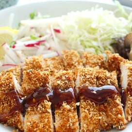

Chicken Katsu

Description
A delicious Japanese style fried chicken. This dish can also be used to make Tonkatsu,
just simply use pork cutlets instead of chicken.
Ingredients
- 4 skinless, boneless chicken breast halves - pounded to 1/2 inch thickness
- salt and pepper to taste
- 2 tablespoons all-purpose flour
- 1 egg, beaten
- 1 cup panko bread crumbs
- 1 cup oil for frying, or as needed
Directions
Step 1
- Season the chicken breasts on both sides with salt and pepper. Place the flour,
egg and panko crumbs into separate shallow dishes. Coat the chicken breasts in flour,
shaking off any excess. Dip them into the egg,
and then press into the panko crumbs until well coated on both sides
Step 2
- Heat 1/4 inch of oil in a large skillet over medium-high
heat. Place chicken in the hot oil,
and cook 3 or 4 minutes per side, or until golden brown.
Return to main page